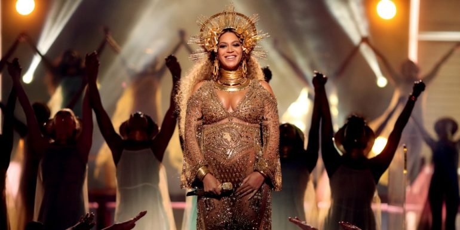
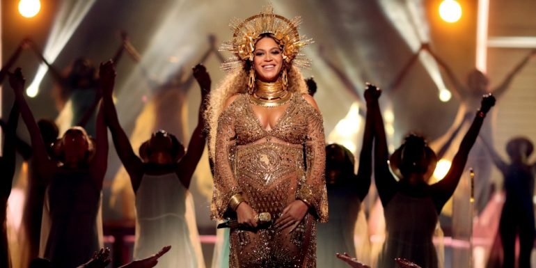

Como se originaron los Grammys
Los premios Grammy fueron creados por la Recording Academy (una asociación de estadunidenses profesionalmente relacionados con la industria de la música) para reconocer a los artistas más destacados en la industria de la grabación. Su entrega suele realizarse en febrero y están considerados como los Oscar de la música.
Su primera entrega se remonta a 1959 y la estatuilla es un gramófono dorado. Actualmente suman 105 categorías en 30 géneros de música, los cuales se otorgan por votación y no por índice de popularidad, como ocurre con los American Music Awards y los Billboard Music Awards.
Desde 2000 y debido a la creciente importancia del mercado y de la producción de música en el ámbito de América Latina, y entre la población hispana de EU, se lleva a cabo la entrega de los premios Grammy Latino, que actualmente se dividen en 50 categorías y se entregan en septiembre.

 
